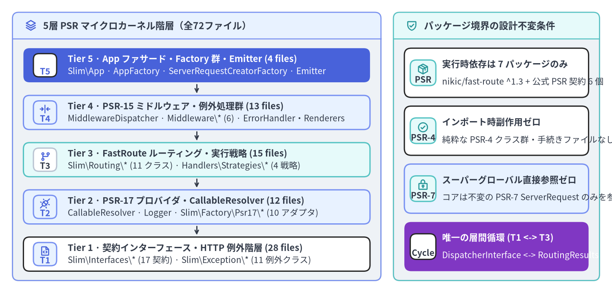
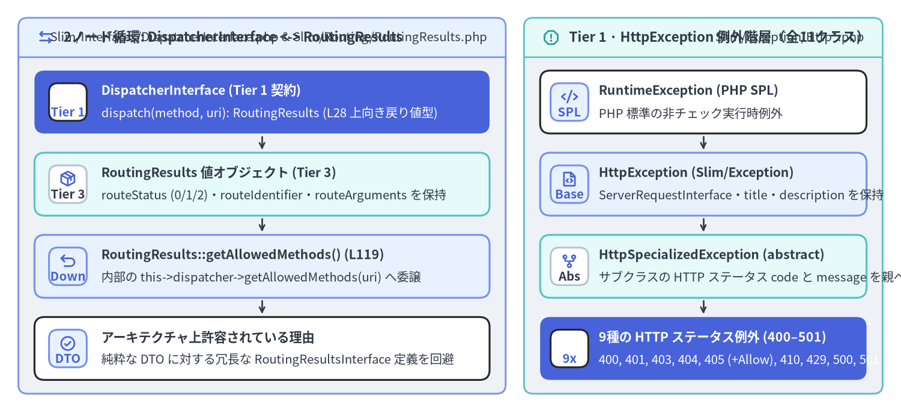

5層モジュール構造・PSR 契約インターフェース・依存結合分析
Slim Framework v4.15.3 は、PSR-7 / PSR-15 / PSR-11 準拠の HTTP マイクロフレームワーク全体をわずか 72 個の PHP ソースファイル（3,149 LOC、72 クラス/インターフェース、311 メソッド、1ファイル平均 43.7 LOC） で実装しています。Slim/ 配下のすべてのファイルは composer.json の "Slim\\": "Slim/" による PSR-4 オートロード規約に 1 対 1 で対応し、9 行目で必ず declare(strict_types=1); を宣言しており、Slim\App および Slim\Factory\* から最下層の Slim\Interfaces\* / Slim\Exception\* へと単方向に依存が流れる 5層マイクロカーネル・パッケージ構造 を形成しています。

Source Code
from drawlib.canvas import save, setup
from drawlib.icons import phosphor
from drawlib.smartarts import CardList, Panel
from drawlib.styles import Colors, Styles
setup(width=196, height=94, dpi=150)
# Left Panel: 5-Tier Downward Dependency Hierarchy
p_dag = Panel(
"5層 PSR マイクロカーネル階層（全72ファイル）",
"",
style=Styles.Neutral.patch(shape_r=2.0),
header_style=Styles.PrimaryNeutral.patch(shape_line_width=1.2),
text_style=Styles.DarkBold.patch(text_size=11.0),
icon=phosphor.stack,
icon_style=Styles.PrimaryBold,
header_variant="filled",
header_height=8.5,
)
p_dag.draw((4.0, 4.0), width=118.0, height=86.0)
dx, dw, dh = p_dag.get_content_box((4.0, 4.0), width=118.0, height=86.0, padding=(3.5, 3.0))
tiers = CardList(
style=Styles.White,
text_style=Styles.DarkBold.patch(text_size=10.5),
description_style=Styles.Dark.patch(text_size=10.0),
badge_shape="rounded_rect",
badge_style=Styles.PrimaryNeutral,
badge_text_style=Styles.PrimaryBold.patch(text_size=10.0),
icon_style=Styles.PrimaryBold,
direction="vertical",
spacing=2.5,
show_arrows=True,
arrow_style=Styles.DarkBold.patch(line_arrow_head_scale=10, line_width=1.4),
)
tiers.add(
"Tier 5 · App ファサード・Factory 群・Emitter (4 files)",
"Slim\\App · AppFactory · ServerRequestCreatorFactory · Emitter",
badge_text="T5",
icon=phosphor.rocket_launch,
style=Styles.PrimaryFlat,
text_style=Styles.WhiteBold.patch(text_size=10.5),
description_style=Styles.White.patch(text_size=10.0),
badge_style=Styles.White,
badge_text_style=Styles.PrimaryBold.patch(text_size=10.0),
icon_style=Styles.WhiteBold,
)
tiers.add(
"Tier 4 · PSR-15 ミドルウェア・例外処理群 (13 files)",
"MiddlewareDispatcher · Middleware\\* (6) · ErrorHandler・Renderers",
badge_text="T4",
icon=phosphor.arrows_in_line_horizontal,
style=Styles.PrimaryNeutral,
)
tiers.add(
"Tier 3 · FastRoute ルーティング・実行戦略 (15 files)",
"Slim\\Routing\\* (11 クラス) · Handlers\\Strategies\\* (4 戦略)",
badge_text="T3",
icon=phosphor.git_branch,
style=Styles.SecondaryNeutral,
badge_style=Styles.White.patch(shape_line_color=Colors.Gray4),
badge_text_style=Styles.DarkBold.patch(text_size=10.0),
)
tiers.add(
"Tier 2 · PSR-17 プロバイダ・CallableResolver (12 files)",
"CallableResolver · Logger · Slim\\Factory\\Psr17\\* (10 アダプタ)",
badge_text="T2",
icon=phosphor.plugs_connected,
style=Styles.PrimaryNeutral,
)
tiers.add(
"Tier 1 · 契約インターフェース・HTTP 例外階層 (28 files)",
"Slim\\Interfaces\\* (17 契約) · Slim\\Exception\\* (11 例外クラス)",
badge_text="T1",
icon=phosphor.file_code,
style=Styles.White,
)
tiers.draw(xy=dx, width=dw, height=dh)
# Right Panel: Architectural Boundaries & Coupling Invariants
p_right = Panel(
"パッケージ境界の設計不変条件",
"",
style=Styles.Neutral.patch(shape_r=2.0),
header_style=Styles.SecondaryNeutral.patch(shape_line_width=1.2),
text_style=Styles.DarkBold.patch(text_size=11.0),
icon=phosphor.shield_check,
icon_style=Styles.SecondaryBold,
header_variant="filled",
header_height=8.5,
)
p_right.draw((126.0, 4.0), width=66.0, height=86.0)
rx, rw, rh = p_right.get_content_box((126.0, 4.0), width=66.0, height=86.0, padding=(3.5, 3.0))
notes = CardList(
style=Styles.White,
text_style=Styles.DarkBold.patch(text_size=10.4),
description_style=Styles.Dark.patch(text_size=10.0),
badge_shape="rounded_rect",
badge_style=Styles.SecondaryNeutral,
badge_text_style=Styles.DarkBold.patch(text_size=10.0),
icon_style=Styles.SecondaryBold,
direction="vertical",
spacing=2.8,
)
notes.add(
"実行時依存は 7 パッケージのみ",
"nikic/fast-route ^1.3 + 公式 PSR 契約 6 個",
badge_text="PSR",
icon=phosphor.package,
)
notes.add(
"インポート時副作用ゼロ",
"純粋な PSR-4 クラス群・手続きファイルなし",
badge_text="PSR-4",
icon=phosphor.check_circle,
)
notes.add(
"スーパーグローバル直接参照ゼロ",
"コアは不変の PSR-7 ServerRequest のみを参照",
badge_text="PSR-7",
icon=phosphor.lock_key,
style=Styles.PrimaryNeutral,
)
notes.add(
"唯一の層間循環 (T1 <-> T3)",
"DispatcherInterface <-> RoutingResults",
badge_text="Cycle",
icon=phosphor.arrows_left_right,
style=Styles.AccentFlat,
text_style=Styles.WhiteBold.patch(text_size=10.4),
description_style=Styles.White.patch(text_size=10.0),
badge_style=Styles.White,
badge_text_style=Styles.DarkBold.patch(text_size=10.0),
icon_style=Styles.WhiteBold,
)
notes.draw(xy=rx, width=rw, height=rh)
save()
1. 5層パッケージ＆名前空間トポロジ
Slim v4.15.3 は Slim\ 配下の 10 個の PSR-4 サブ名前空間に 72 ファイルを分割しています。ルーティング状態・DI コンテナ解決・HTTP 出力を単一の巨大な Application クラスに混在させるのではなく、各責務を独立したレイヤーに隔離し、上位層から下位層への単方向依存を徹底しています。
| レイヤー | 役割とアーキテクチャ責務 | ファイル数・LOC | 構成 PHP モジュール（Slim/） |
許可される内部依存先 |
|---|---|---|---|---|
| Tier 5 | App ファサード・ブートストラップ Factory・SAPI 送出 | 4 ファイル（459 LOC） |
Slim/App.php（121 LOC）、Slim/ResponseEmitter.php（137 行 / 92 LOC）、Slim/Factory/AppFactory.php（160 LOC）、Slim/Factory/ServerRequestCreatorFactory.php（86 LOC） |
Tiers 1〜4（デフォルトのオブジェクトグラフ構築と SAPI ストリーム送出を統括） |
| Tier 4 | PSR-15 ミドルウェアスタック・エラー描画サブシステム | 13 ファイル（935 LOC） |
Slim/MiddlewareDispatcher.php（177 LOC）、Slim/Middleware/{Routing,Error,BodyParsing,ContentLength,MethodOverride,OutputBuffering}Middleware.php、Slim/Handlers/ErrorHandler.php（187 LOC）、Slim/Error/AbstractErrorRenderer.php、Slim/Error/Renderers/{Html,Json,PlainText,Xml}ErrorRenderer.php |
Tiers 1〜3（Slim\Routing\RouteContext、RoutingResults、Slim\CallableResolver、Slim\Logger、Slim\Interfaces\*、Slim\Exception\*） |
| Tier 3 | FastRoute ルーティングエンジン・ハンドラ実行戦略 | 15 ファイル（953 LOC） |
Slim/Routing/{RouteCollectorProxy,RouteCollector,Route,RouteGroup,RouteContext,RouteParser,RouteResolver,RouteRunner,Dispatcher,FastRouteDispatcher,RoutingResults}.php、Slim/Handlers/Strategies/{RequestResponse,RequestResponseArgs,RequestResponseNamedArgs,RequestHandler}.php |
Tiers 1〜2（Route/RouteGroup が利用する MiddlewareDispatcher、Slim\Interfaces\*、Slim\Exception\*）+ FastRoute\* |
| Tier 2 | PSR-17 プロバイダアダプタ・コンテナ Callable 解決 | 12 ファイル（391 LOC） |
Slim/CallableResolver.php（131 LOC）、Slim/Logger.php（33 行 / 18 LOC）、Slim/Factory/Psr17/{Psr17FactoryProvider,Psr17Factory,ServerRequestCreator,SlimHttpServerRequestCreator,SlimPsr17Factory,SlimHttpPsr17Factory,NyholmPsr17Factory,GuzzlePsr17Factory,LaminasDiactorosPsr17Factory,HttpSoftPsr17Factory}.php |
Tier 1（Slim\Interfaces\*）+ 外部 PSR-11 / PSR-17 / PSR-3 契約 |
| Tier 1 | 契約インターフェース群・HTTP 専門例外階層 | 28 ファイル（411 LOC） |
Slim/Interfaces/*Interface.php（17 ファイル）、Slim/Exception/HttpException.php、Slim/Exception/HttpSpecializedException.php、Slim/Exception/Http{BadRequest,Unauthorized,Forbidden,NotFound,MethodNotAllowed,Gone,TooManyRequests,InternalServerError,NotImplemented}Exception.php（11 ファイル） |
最下層の契約レイヤー（DispatcherInterface -> RoutingResults を除き、Psr\* と PHP 標準 SPL のみに依存） |
外部 Composer 依存境界（composer.json）
composer.json の require セクションを確認すると、Slim v4.15.3 のランタイム依存は nikic/fast-route（^1.3）と PHP-FIG の公式インターフェースパッケージ 6 個のみで構成されており、特定の具象ライブラリへのロックインが完全に排除されています。
{
"require": {
"php": "~7.4.0 || ~8.0.0 || ~8.1.0 || ~8.2.0 || ~8.3.0 || ~8.4.0 || ~8.5.0",
"ext-json": "*",
"nikic/fast-route": "^1.3",
"psr/container": "^1.0 || ^2.0",
"psr/http-factory": "^1.1",
"psr/http-message": "^1.1 || ^2.0",
"psr/http-server-handler": "^1.0",
"psr/http-server-middleware": "^1.0",
"psr/log": "^1.1 || ^2.0 || ^3.0"
}
}
[!NOTE] 上流タグ
4.15.3におけるApp::VERSION定数について:Slim/App.php:46のクラス定数はpublic const VERSION = '4.15.1';となっています。これは上流の4.15.2/4.15.3リリースコミットが PHP 8.4/8.5 対応やテストスイート修正を行った際、ハードコードされた定数文字列の更新を省略したためです。
2. DispatcherInterface <-> RoutingResults の双方向結合分析
Slim/ 配下の全 72 ファイルに対する AST 依存グラフ解析（PNI501 監査）において、コードベース全体で唯一の層間双方向参照（circular_dependencies_count = 1） として検出されるのが、Slim\Interfaces\DispatcherInterface（Tier 1）と Slim\Routing\RoutingResults（Tier 3）の 2 ノード間サイクルです。

Source Code
from drawlib.canvas import save, setup
from drawlib.icons import phosphor
from drawlib.smartarts import CardList, Panel
from drawlib.styles import Colors, Styles
setup(width=196, height=90, dpi=150)
# Left Panel: 2-Node Cycle of DispatcherInterface <-> RoutingResults
p_left = Panel(
"2ノード循環: DispatcherInterface <-> RoutingResults",
"Slim/Interfaces/DispatcherInterface.php & Slim/Routing/RoutingResults.php",
style=Styles.Neutral.patch(shape_r=2.0),
header_style=Styles.PrimaryNeutral.patch(shape_line_width=1.2),
text_style=Styles.DarkBold.patch(text_size=10.8),
description_style=Styles.Dark.patch(text_size=9.8),
icon=phosphor.arrows_left_right,
icon_style=Styles.PrimaryBold,
header_variant="filled",
header_height=8.5,
)
p_left.draw((4.0, 4.0), width=106.0, height=82.0)
lx, lw, lh = p_left.get_content_box((4.0, 4.0), width=106.0, height=82.0, padding=(3.5, 3.0))
cycle_list = CardList(
style=Styles.White,
text_style=Styles.DarkBold.patch(text_size=10.2),
description_style=Styles.Dark.patch(text_size=9.8),
badge_shape="rounded_rect",
badge_style=Styles.PrimaryNeutral,
badge_text_style=Styles.PrimaryBold.patch(text_size=9.8),
icon_style=Styles.PrimaryBold,
direction="vertical",
spacing=2.6,
show_arrows=True,
arrow_style=Styles.DarkBold.patch(line_arrow_head_scale=10, line_width=1.3),
)
cycle_list.add(
"DispatcherInterface (Tier 1 契約)",
"dispatch(method, uri): RoutingResults (L28 上向き戻り値型)",
badge_text="Tier 1",
icon=phosphor.compass,
style=Styles.PrimaryFlat,
text_style=Styles.WhiteBold.patch(text_size=10.2),
description_style=Styles.White.patch(text_size=9.8),
badge_style=Styles.White,
badge_text_style=Styles.PrimaryBold.patch(text_size=9.8),
icon_style=Styles.WhiteBold,
)
cycle_list.add(
"RoutingResults 値オブジェクト (Tier 3)",
"routeStatus (0/1/2)・routeIdentifier・routeArguments を保持",
badge_text="Tier 3",
icon=phosphor.package,
style=Styles.SecondaryNeutral,
badge_style=Styles.White.patch(shape_line_color=Colors.Gray4),
badge_text_style=Styles.DarkBold.patch(text_size=9.8),
)
cycle_list.add(
"RoutingResults::getAllowedMethods() (L119)",
"内部の this->dispatcher->getAllowedMethods(uri) へ委譲",
badge_text="Down",
icon=phosphor.arrow_u_up_left,
style=Styles.PrimaryNeutral,
)
cycle_list.add(
"アーキテクチャ上許容されている理由",
"純粋な DTO に対する冗長な RoutingResultsInterface 定義を回避",
badge_text="DTO",
icon=phosphor.check_circle,
)
cycle_list.draw(xy=lx, width=lw, height=lh)
# Right Panel: HttpException & HttpSpecializedException Hierarchy
p_right = Panel(
"Tier 1 · HttpException 例外階層（全11クラス）",
"Slim/Exception/Http*.php",
style=Styles.Neutral.patch(shape_r=2.0),
header_style=Styles.SecondaryNeutral.patch(shape_line_width=1.2),
text_style=Styles.DarkBold.patch(text_size=10.8),
description_style=Styles.Dark.patch(text_size=9.8),
icon=phosphor.warning_octagon,
icon_style=Styles.SecondaryBold,
header_variant="filled",
header_height=8.5,
)
p_right.draw((114.0, 4.0), width=78.0, height=82.0)
rx, rw, rh = p_right.get_content_box((114.0, 4.0), width=78.0, height=82.0, padding=(3.5, 3.0))
ex_list = CardList(
style=Styles.White,
text_style=Styles.DarkBold.patch(text_size=10.2),
description_style=Styles.Dark.patch(text_size=9.8),
badge_shape="rounded_rect",
badge_style=Styles.PrimaryNeutral,
badge_text_style=Styles.PrimaryBold.patch(text_size=9.8),
icon_style=Styles.PrimaryBold,
direction="vertical",
spacing=2.6,
show_arrows=True,
arrow_style=Styles.DarkBold.patch(line_arrow_head_scale=10, line_width=1.3),
)
ex_list.add(
"RuntimeException (PHP SPL)",
"PHP 標準の非チェック実行時例外",
badge_text="SPL",
icon=phosphor.code,
)
ex_list.add(
"HttpException (Slim/Exception)",
"ServerRequestInterface・title・description を保持",
badge_text="Base",
icon=phosphor.file_code,
style=Styles.PrimaryNeutral,
)
ex_list.add(
"HttpSpecializedException (abstract)",
"サブクラスの HTTP ステータス code と message を親へ注入",
badge_text="Abs",
icon=phosphor.git_fork,
style=Styles.SecondaryNeutral,
badge_style=Styles.White.patch(shape_line_color=Colors.Gray4),
badge_text_style=Styles.DarkBold.patch(text_size=9.8),
)
ex_list.add(
"9種の HTTP ステータス例外 (400–501)",
"400, 401, 403, 404, 405 (+Allow), 410, 429, 500, 501",
badge_text="9x",
icon=phosphor.shield_warning,
style=Styles.PrimaryFlat,
text_style=Styles.WhiteBold.patch(text_size=10.2),
description_style=Styles.White.patch(text_size=9.8),
badge_style=Styles.White,
badge_text_style=Styles.PrimaryBold.patch(text_size=9.8),
icon_style=Styles.WhiteBold,
)
ex_list.draw(xy=rx, width=rw, height=rh)
save()
なぜこの双方向参照がソースコード上に存在するのか？
Slim/Interfaces/DispatcherInterface.php と Slim/Routing/RoutingResults.php の双方の実装を確認すると、設計上の意図が明確に浮かび上がります。
- Tier 1 から Tier 3 への上向き参照（
Slim/Interfaces/DispatcherInterface.php:13-28）:Slim\Interfaces\*内の他のすべてのインターフェースはプリミティブ型または他のインターフェース型のみを返却しますが、RoutingResultsには対応するRoutingResultsInterfaceが定義されていません。そのため 13 行目で具象クラスSlim\Routing\RoutingResultsを直接useしています。namespace Slim\Interfaces; use Slim\Routing\RoutingResults; interface DispatcherInterface { public function dispatch(string $method, string $uri): RoutingResults; /** @return string[] */ public function getAllowedMethods(string $uri): array; } - Tier 3 から Tier 1 への下向き参照と遅延評価（
Slim/Routing/RoutingResults.php:22-60, 104-107）:RoutingResultsは$routeStatus（NOT_FOUND = 0、FOUND = 1、METHOD_NOT_ALLOWED = 2）、$routeIdentifier、$routeArgumentsを保持する値オブジェクトです。しかし、ある URI に対して許可されている HTTP メソッド一覧を算出する処理（FastRouteDispatcher::getAllowedMethods()）は、全 HTTP メソッドの静的マップと可変正規表現テーブルを走査するため高コストです。通常の200 OKや404 Not Found時にはこの計算をスキップし、405 Method Not Allowed発生時などにRoutingResults::getAllowedMethods()が呼ばれた瞬間にのみ**遅延評価（Lazy Evaluation）**できるよう、RoutingResultsはコンストラクタでDispatcherInterface $dispatcherへの参照を受け取って保持しています。public function getAllowedMethods(): array { return $this->dispatcher->getAllowedMethods($this->uri); }
[!TIP] 循環参照を解消するための設計改善案:
Slim\Interfaces\RoutingResultsInterfaceを新設し、DispatcherInterface::dispatch(): RoutingResultsInterfaceを返すように変更すれば、遅延評価の仕組みを一切損なうことなくSlim\Interfaces\からSlim\Routing\への上向き依存を完全に除去できます。
3. 契約インターフェース一覧（Slim\Interfaces\*）と HTTP 例外階層（Slim\Exception\*）
全17契約インターフェースの役割と実装クラス対応表
Slim 4 のすべての主要コンポーネントは、Slim\App::__construct()（Slim/App.php:55-62）のコンストラクタ引数または Slim\Factory\AppFactory の静的セッター群（Slim/Factory/AppFactory.php:173-216）を通じて差し替え可能です。
契約インターフェース（Slim\Interfaces\*） |
デフォルトの具象実装クラス（Slim\） |
主要メソッド契約 |
|---|---|---|
CallableResolverInterface |
Slim\CallableResolver |
resolve($toResolve): callable |
AdvancedCallableResolverInterface |
Slim\CallableResolver |
CallableResolverInterface を継承し resolveRoute($toResolve): callable と resolveMiddleware($toResolve): callable を追加 |
MiddlewareDispatcherInterface |
Slim\MiddlewareDispatcher |
seedMiddlewareStack(RequestHandlerInterface $kernel): void、handle(ServerRequestInterface $request): ResponseInterface、add($middleware): self、addMiddleware(MiddlewareInterface $middleware): self |
RouteCollectorProxyInterface |
Slim\Routing\RouteCollectorProxy, Slim\App |
get()、post()、put()、patch()、delete()、options()、any()、map()、group()、redirect()、getBasePath()、setBasePath() |
RouteCollectorInterface |
Slim\Routing\RouteCollector |
map()、group()、getRoutes()、getNamedRoute()、removeNamedRoute()、lookupRoute()、getCacheFile()、setCacheFile() |
RouteGroupInterface |
Slim\Routing\RouteGroup |
collectRoutes()、add()、addMiddleware()、appendMiddlewareToDispatcher(MiddlewareDispatcher $dispatcher)、getPattern() |
RouteInterface |
Slim\Routing\Route |
prepare(array $arguments)、run(ServerRequestInterface $request)、getInvocationStrategy()、setInvocationStrategy()、getMethods()、getPattern()、getName() |
RouteParserInterface |
Slim\Routing\RouteParser |
relativeUrlFor(string $routeName, array $data = [], array $queryParams = [])、urlFor(...)、fullUrlFor(UriInterface $uri, ...) |
RouteResolverInterface |
Slim\Routing\RouteResolver |
computeRoutingResults(string $uri, string $method): RoutingResults、resolveRoute(string $identifier): RouteInterface |
DispatcherInterface |
Slim\Routing\Dispatcher |
dispatch(string $method, string $uri): RoutingResults、getAllowedMethods(string $uri): array |
InvocationStrategyInterface |
RequestResponse, RequestResponseArgs, RequestResponseNamedArgs |
__invoke(callable $callable, ServerRequestInterface $request, ResponseInterface $response, array $routeArguments): ResponseInterface |
RequestHandlerInvocationStrategyInterface |
Slim\Handlers\Strategies\RequestHandler |
PSR-15 RequestHandlerInterface 型ルートハンドラ用のマーカーインターフェース |
ErrorHandlerInterface |
Slim\Handlers\ErrorHandler |
__invoke(ServerRequestInterface $request, Throwable $exception, bool $displayErrorDetails, bool $logErrors, bool $logErrorDetails): ResponseInterface |
ErrorRendererInterface |
AbstractErrorRenderer（Html, Json, PlainText, Xml） |
__invoke(Throwable $exception, bool $displayErrorDetails): string |
Psr17FactoryProviderInterface |
Slim\Factory\Psr17\Psr17FactoryProvider |
getFactories(): array、setFactories(array $factories): void、addFactory(string $factory): void |
Psr17FactoryInterface |
Slim\Factory\Psr17\Psr17Factory（および 6 サブクラス） |
getResponseFactory()、getStreamFactory()、getServerRequestCreator()、isResponseFactoryAvailable()、isStreamFactoryAvailable()、isServerRequestCreatorAvailable() |
ServerRequestCreatorInterface |
ServerRequestCreator, SlimHttpServerRequestCreator |
createServerRequestFromGlobals(): ServerRequestInterface |
なぜ HttpException は $request を内部保持するのか？（Slim/Exception/HttpException.php:23-42）
RoutingMiddleware::performRouting()（Slim/Middleware/RoutingMiddleware.php:57-86）は、$request->withAttribute(...) によって RouteContext::ROUTE_PARSER や RouteContext::ROUTING_RESULTS を付与した直後に、RoutingResults::NOT_FOUND や RoutingResults::METHOD_NOT_ALLOWED を検出して new HttpNotFoundException($request) または new HttpMethodNotAllowedException($request) をスローします。
ここで重要なのは、PSR-7 の ServerRequestInterface が不変（Immutable）オブジェクトであるという点です。もし例外オブジェクトが最新の $request を保持していなければ、コールスタックが外側の ErrorMiddleware::process($request, $handler)（Slim/Middleware/ErrorMiddleware.php:74-81）まで巻き戻った際、ErrorMiddleware が持っている古い $request（ルーティング属性が付与される前のインスタンス）しか参照できなくなってしまいます。
そのため HttpException::__construct()（Slim/Exception/HttpException.php:29-37）は例外発生時点の $request をプロパティに保存し、ErrorMiddleware::handleException()（Slim/Middleware/ErrorMiddleware.php:85-87）が以下のように属性付与済みの最新 $request を復元する設計になっています。
// Slim/Middleware/ErrorMiddleware.php:83-87
public function handleException(ServerRequestInterface $request, Throwable $exception): ResponseInterface
{
if ($exception instanceof HttpException) {
$request = $exception->getRequest();
}
続いて 第2章: AppFactory と Psr17FactoryProvider 内部実装 に進み、PSR-17 自動検出アルゴリズムと App::__construct() のオブジェクトグラフ組み立て処理を詳しく見ていきましょう。